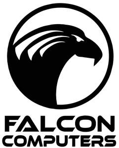

Trade Mark Journal No.2025/036 5 September 2025
UK00004218979 14 June 2025 (9,37)

- Class 9
- Computers; Laptops [computers]; Laptop computers; Computers and computer hardware; Computers (Printers for use with -); Printers for computers; Printers for use with computers; Desktop computers; Software for computers; Mouses for computers; Notebook computers; Monitors for computers; Interfaces for computers; Tablet computers; Portable computers; Headsets for use with computers; Components for computers; Personal computers; Speakers for computers; All-in-one computers; Computer modems; Memories for use with computers; Peripheral equipment for computers; Computer printers; Computer servers; Computer peripherals; Electronic components for computers; Input devices for computers; Microchips [computer hardware]; Computer motherboards; Computer touchscreens; Computer systems; Wireless headsets for tablet computers; Computer keyboards; Cooling pads for laptop computers; Stick computers; Computer hardware modules for use in Internet of Things electronic devices; Computer networks; Wireless computer peripherals; Personal home computers; Work stations [computers]; Trackballs [computer peripherals]; Computer diskettes; Operating computer software for main frame computers; Computer disks; Cases adapted for netbook computers; Computer chipsets; Computer mouses; Screen filters for computers and televisions; Covers for tablet computers; Computer controllers; Computer joysticks; Personal computer cameras; Computer screens; Computer interfaces; Controlling software for computer printers; Computer keypads; Disk drives for computers; Drives (Disk -) for computers; Computer software for the monitoring of computer systems; Computer hardware; Hardware (Computer -); LAN [local area network] computer cards for connecting portable computer devices to computer networks; Communications servers [computer hardware]; Computer software; Monitors [computer hardware]; Computer peripheral devices; Peripheral devices (Computer -); Computer hardware modules for use in electronic devices using the Internet of Things [IoT]; Computer software for mobile phones; Wearable computer peripherals; Computer monitors; Computer memory devices; CD drives for computers .
- Class 37
- Repair of computers; Installation of computers; Maintenance of computers; Installation, repair and maintenance of computers and computer peripherals.
Falcon Computers Ltd